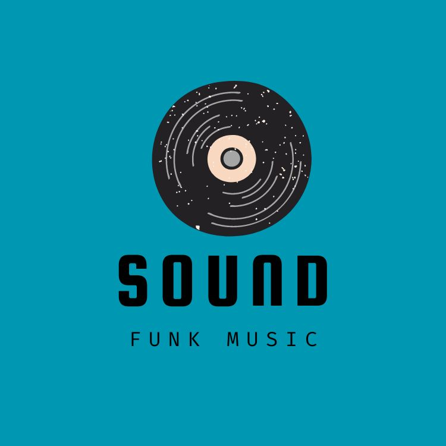

GoodBuy|Youtube Music-Funk Music Recommendations

Funk music is renowned for its distinctive rhythm and groove. Its beats are typically robust and rhythmically rich, making it irresistible. The melodies in funk music are diverse, ranging from slow and mellow to upbeat, infusing listeners with vitality and dynamism. Moreover, the lyrics of funk music are filled with reflections on life and criticisms of social phenomena, making it a vibrant and positively charged music genre.
History of Funk Music
Funk music originated in the United States in the 1970s, blending various musical elements. It emerged from African American communities, influenced by African music, jazz, and soul music. The birth of funk music was a rebellion against mainstream music at the time, imbued with a strong sense of rebellion and revolutionary spirit, becoming the voice of the youth.
Funk music reached its peak in the 1970s, becoming the mainstream music style of the time. Its history can be traced back to the groundbreaking works of legendary musicians like James Brown, who captivated global audiences with their unique musical styles and performances. Over time, funk music evolved into various branches such as P-Funk, Disco Funk, Jazz Funk, each with its unique characteristics and charm.
Classification of Funk Music
Funk music is an extremely diverse music genre, categorized into various types and branches, each with its unique features and charm. Here are a few examples of types and notable performers:
- Pure Funk: Pure funk is the basic form of funk music, characterized by strong rhythm and energetic melodies. This style of funk music typically revolves around drum, bass, and guitar rhythms, with concise and upbeat melodies that are irresistible.
Example: James Brown’s “I Got You (I Feel Good)”
- Funk Rock: Funk rock combines funk music with rock music, blending the rhythmic elements of funk with the guitar solos of rock music. This style of music typically features stronger rhythms and prominent guitar solos, embodying the wildness of rock music and the vitality of funk music.
Example: Red Hot Chili Peppers’ “Give It Away”
- Funk Jazz: Funk Jazz is a fusion of funk music and jazz, combining the rhythmic elements of funk with the improvisational nature of jazz. This style of music typically features complex harmonic structures and rich improvisation, showcasing the essence of both funk and jazz music.
Example: Herbie Hancock’s “Chameleon”
-
Funk Soul: Funk Soul combines funk music with the emotional expression of soul music. This style of music typically features heartfelt lyrics and emotionally rich melodies, showcasing the commonalities between funk and soul music.
-
Example: Aretha Franklin’s “Respect”
-
Funk Pop: Funk Pop combines the rhythmic elements of funk with the melodic hooks of pop music. This style of music typically features the commercial appeal of pop music and the vitality of funk music, appealing to a wide audience.
Example: Bruno Mars’ “Uptown Funk”
World-renowned Funk Music Bands and Singers
-
James Brown: Known as the “Godfather of Funk,” James Brown was a pioneer of funk music whose energetic and inspirational music had a profound impact on contemporary music.
-
Parliament-Funkadelic: Led by George Clinton, this funk band is renowned for its unique musical style and extraterrestrial stage performances.
-
Sly and the Family Stone: This funk band gained global fame in the 1960s and 70s, blending funk, soul, pop, and rock elements in their music.
-
Prince: This legendary musician, known as the “King of Funk,” fused funk, rock, pop, and soul elements in his music, influencing countless musicians and fans.
Whether it’s the history, types, or famous bands and singers of funk music, each aspect demonstrates the rich diversity and influence of this music genre. For those who love music and rhythm, funk music is undoubtedly an essential musical experience.
We’ve previously shared a YouTube music channel that has recently added some funk music tracks. Let’s enjoy them together. Due to YouTube’s music copyright policies, please click the link below to jump to YouTube and listen!


Other Music Genres
For those interested in music, you may also refer to previous articles to learn about introductions to other music genres.
Enjoy Better Music Experience
Want to enjoy a better music experience? You might want to check out the previous articles introducing speakers and headphones.